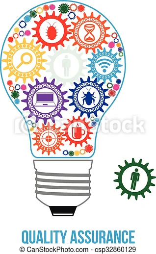

Olá, Sou Ana Carolina, curso Análise e Desenvolvimento de Sistemas estou em fase de transição de carreira, da área educacional para tecnologia !!!
Aqui você pode saber mais sobre mim e sobre como trabalho, dar uma olhada em minha experiência e habilidades ou se quiser entrar em contato para novas aprendizagens.
Fornmação Educacional
Formação Profissional
Contato

Sobre mim
Gosto muito de ver séries de investigação como NCIS, com o incrível Gbis que comanda a equipe com seu jeito mais sério, mas ao mesmo tempo como um pai.
Também curto a franquia de Star Wars, principamente a séries Mandolorian, com o fofo do GROGU, e seu companheiro que no início parece ser uma pessoa fria, mas não resiste ao encanto do baby Yoda.
Sou uma pessoa caseira, mas amo sair em FAMÍLIA, estar junto com a família.
Tenho um cachorro chamado BOLINHA, que me acompanha há 10 anos (já está meio velinho rsrs)
Interesses
- Javascript
- HTML5
- CSS3
- Cypress
- Angular | React
- QA
- Engenharia de Software
- Tipos de Testes
- Níveis de Testes